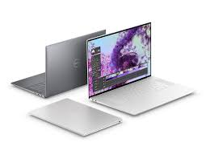
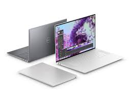
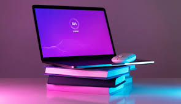
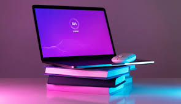
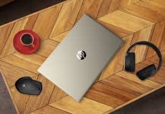
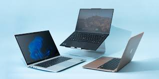
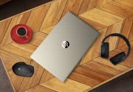
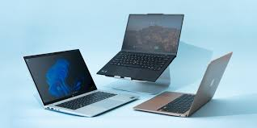

Are you considering bringing a new laptop to your home but unsure which model to choose?
You can find multiple options with enhanced features that can meet your requirements.
With information technology deeply penetrating many areas of people's lives, this device
has become a must-have. The primary advantage of a portable computer is its mobility.
You can choose a device with a compact size, lightweight, and built-in battery so that
you can easily move it from one place to another. Laptop buying has become easier with
the plethora of options available online.You can take this device while you are on the go.
Take the device to a park, cafe, or car to complete your task conveniently. Buy laptops online
from brands like Acer, Asus, Avita, Infinix, Nokia, and others that suit your preference.
You can choose a device with a range of applications and features to help you get the most
out of your portable computer. The USB-C ports allow you to transfer essential files from
your smartphone to your computer. The laptop price depends on the features and benefits it offers.
Swipe and select a laptop after comparing features and quickly access the necessary data anytime
and anywhere. We have a wide range of premium laptops according to your uses
first laptop invented
The first true laptop to make it to market, the Osborne 1, hit shelves in April 1981. Created by
Adam Osborne, the computer featured a 12.7-centimetre (5-inch) screen and weighed 11.1 kilograms
(24.5 pounds). However, the machine still required an
AC outlet for poweradvantage of a portable computer is its mobility.
You can choose a device with a compact size, lightweight, and built-in battery so that
you can easily move it from one place to another. Laptop buying has become easier with
the plethora of options available online.You can take this device while you are on the go.
Take the device to a park, cafe, or car to complete your task conveniently. Buy laptops online
from brands like Acer, Asus, Avita, Infinix, Nokia, and others that suit your preference.
You can choose a device with a range of applications and features to help you get the most
out of your portable computer. The USB-C ports allow you to transfer essential files from
your smartphone to your computer. The laptop price depends on the features and benefits it offers.
Swipe and select a laptop after comparing features and quickly access the necessary data anytime
and anywhere. We have a wide range of premium laptops according to your uses
India's Largest Laptop Store
The Portal was a portable microcomputer designed and marketed by the studies and developments department
of the French firm R2E Micral in 1980 at the request of the company CCMC specializing in payroll and
accounting. It was based on an Intel 8085 processor, 8-bit, clocked at 2 MHz. It was equipped with a
central 64K byte RAM, a keyboard with 58 alphanumeric keys and 11 numeric keys (in separate blocks),
a 32-character screen, a floppy disk (capacity - 140,000 characters), a thermal printer (speed - 28
characters/second), an asynchronous channel, a synchronous channel, and a 220-volt power supply.
Designed for an operating temperature of 15 35 °C, it weighed 12 kg (26 lb) and its dimensions were
45 45 15 cm. It ran the Prologue operating system[2] and provided total mobility.
India's Largest Laptop Store
The Compaq Portable was the first PC-compatible portable computer created in 1982.
The first shipment was in March 1983 and was priced at US$2,995 (equivalent to $9,456 in 2023).
The Compaq Portable folded upinto a luggable case the size of a portable sewing machine,
similar in size to the Osborne 1. The third model of this development, Compaq Portable II,
featured high resolution graphics on its tube display. It was the first portable computer
ready to be used on the shop floor, and for CAD and diagram display. It established Compaq
as a major brand on the market.
India's Largest Laptop Store
Two other noteworthy early laptops were the Sharp PC-5000 (similar in many respects to the Dulmont Magnum)
and the Gavilan SC, announced in 1983 but first sold in 1984, Gavilan filing bankruptcy the same year.
Both ran the 8/16-bit Intel 8088 CPU. The Gavilan was notably the first computer to be marketed as a
"laptop". It was equippedwith an internal floppy disk drive and a pioneering touchpad-like pointing
device, installed on a panel above the keyboard. Like the GRiD Compass, the Gavilan and the Sharp were
housed in clamshell cases, but they were partly IBM-compatible, although primarily running their own
system software. Both had LCDs, and could connect to optional external printers.

 


 

 


